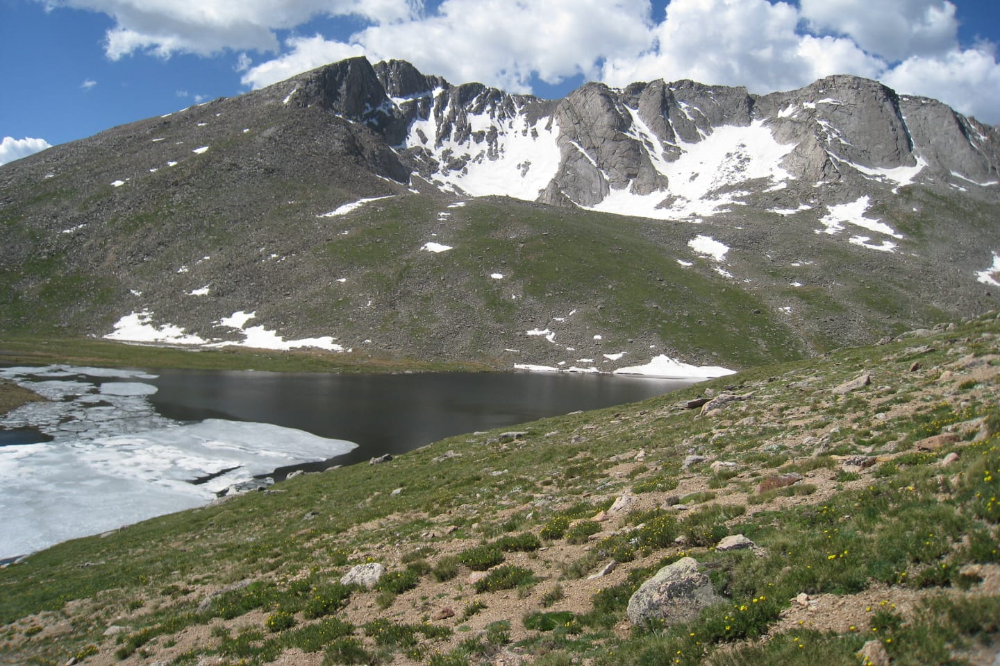

Overview
Summit Lake Park contains a small alpine tundra and lake situated on the north side of Mount Blue Sky, just outside of Idaho Springs, Colorado. The park is managed by the City of Denver as part of their Denver Mountain Parks system. It holds the highest elevation of any Denver Mountain Park, and is the highest elevation city park in the entire United States.
Summit Lake Park also borders Arapaho National Forest and the Mount Evans Wilderness Area, both managed by the U.S. Forest Service. In 1965, the park received the National Natural Landmark designation from the National Park Service — a recognition of its exceptional ecological and scientific significance. The park can be accessed seasonally via the Mount Blue Sky Byway, the highest paved road in North America.

Summit Lake Park has been a National Natural Landmark since 1965, recognized by the National Park Service for its outstanding ecological and scientific value.
Ecological Significance
Summit Lake Park is notable for being home to multiple species of arctic and alpine plants that are endemic outside of the Arctic Circle. As an alpine tundra, the park represents a rare, fragile, and fragmented ecosystem type. Alpine tundras are few and far between in the lower 48 states, making them extremely vulnerable to disturbance and perturbation.
The park functions as a disjunct ecosystem — a pocket of arctic tundra existing thousands of miles outside of the Arctic Circle. The species found here are more characteristic of northern Alaska than the broader Rocky Mountain region, and many are endemic to this single location. This ecological uniqueness is what makes Summit Lake's conservation both so important and so urgent.
Hydrological Importance
Summit Lake serves as the source for Bear Creek in Lakewood, Colorado — a watercourse that feeds into a much larger regional watershed. As the impacts of climate change intensify and dramatically reduce snowpack and moisture accumulation in the Rocky Mountains, the ability of Summit Lake to supply Bear Creek and its downstream communities may be significantly diminished in the coming years.
The alpine wetlands and tundra soils surrounding the lake act as natural sponges, absorbing spring snowmelt and releasing it gradually through the summer months. The degradation of these systems — through soil compaction, trampling of vegetated banks, or erosion — threatens not only the lake itself but the water security of communities far downstream.
Climate Change Vulnerability
Summit Lake Park faces significant risk in the wake of climate change. As temperatures rise, the treeline advances upward and tundra habitat retreats. Alpine tundra specialists — plants and animals that cannot survive at lower elevations — have nowhere to go. For species already living at the top of the mountain, there is no higher ground.
The same warming that threatens tundra vegetation also threatens the snowpack that supplies the lake and its watershed. The combination of habitat loss and hydrological disruption makes Summit Lake Park one of the most climate-vulnerable ecosystems on the Front Range.
Rising treelines, retreating tundra, and declining snowpack are already measurable at Summit Lake Park. Without active conservation, these trends will accelerate dramatically over the coming decades.
Educational & Recreational Value
Since there are so few alpine tundra environments south of the Arctic Circle, very few Americans ever have the opportunity to see one in person. Because Summit Lake Park is easily accessible by car and within driving distance of Denver, it provides enormous educational opportunities for the public to learn about alpine tundra ecosystems, the flora and fauna that inhabit them, and the importance of conserving rare and fragile environments.
This accessibility is both the park's greatest asset and one of its greatest challenges. The same ease of access that makes Summit Lake an exceptional outdoor classroom also concentrates large numbers of visitors in an extremely delicate landscape — one that can take decades or centuries to recover from even minor disturbance.
Summit Lake Park stands as an important ecosystem which should be conserved due to its significant ecological, educational, recreational, and aesthetic value. It is rare, federally recognized, and under compounding threat from climate change and recreational pressure.